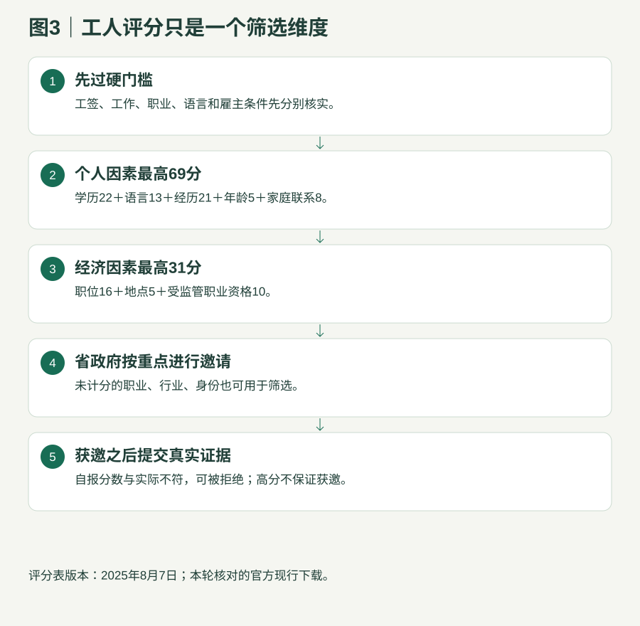

政府政策与留学路径研究
三 办理逻辑与核心条件 把工签、经验、职业、雇主、语言、学历、资金和联邦衔接分别检查。
政策核对 2026-09-24 金额默认加元 资格 ≠ 获邀 ≠ 批准
三 办理逻辑与核心条件
3.1 工人申请共同规则与雇主审查 项目 现行要求与准备 申请顺序 满足类别→提交工人意向表达（Worker Expression of Interest，WEOI）→省邀请→建立申请→交完整材料和费用→决定。入池不是省申请，也不是工签申请。 职位 真实、有工资、每周至少30小时，原则上至少12个月；签名的雇佣合同、职责、工资、地点、双方信息。专设医疗个别合同/兼职等例外另按其规则核。 企业 阿省持续实际经营至少2个完整财政年度；通常上年总收入至少400,000、至少3个全职等值员工。政府与原住民机构等有例外；低于门槛时按经营年数限制可支持人数，不是一概拒绝。 工资 满足最低工资和职位/地区适用最低起薪标准；有劳动力市场影响评估（Labour Market Impact Assessment，LMIA）时遵守其核定工资。不能只用省最低工资代替职业要求。 不合格安排 独立承包、季节/临时零工、部分派遣、所有者或董事持股等不合格关系、无真实营业场所、人在境外远程等按类别审查。 雇主资料 营业与注册、税务收入、员工人数、工伤保险、招聘、工资工时、联系人和支持表；雇主拒绝配合意味着路径不能成立。 工作授权 先核工签类别、雇主/地点限制、有效期和当前实际工作；不同类别对维持身份规则不同。
职位与雇主资格 工人申请官方材料清单 工人意向表达、邀请及完整申请 3.2 阿尔伯塔机会类别：人在阿省工作是前提 维度 具体规则 居住与工签 递交及审理时在阿省合法居住、实际工作，持有效合格工签。维持身份或等待恢复身份不被本类别接受。 合格工签范围 正面劳动力市场影响评估（Labour Market Impact Assessment，LMIA）；指定国际协议、跨国调动、国际经验、法语流动、宗教工作等豁免；受虐工人及适用家庭成员；符合条件的阿省毕业工签；指定临时公共政策。普通配偶开放工签不可笼统认为符合。 工作经验 当前职业：最近18个月阿省至少12个月，或最近30个月加拿大/境外至少24个月；合格阿省毕业工签持有人最近18个月阿省至少6个月。一般每周30小时。 经历排除 原则上不计在加拿大在读期间经验；特定有薪阿省合作实习例外必须逐项核，不把所有学生打工计入。 职业 多数培训、教育、经验与职责等级（Training, Education, Experience and Responsibilities，TEER） 0—5可研究，但34项排除清单及星号范围必须核。幼教须二级/三级；强制认证技工须合格资格。 语言 培训、教育、经验与职责等级（Training, Education, Experience and Responsibilities，TEER） 0—3通常加拿大语言基准（Canadian Language Benchmarks，CLB）/加拿大法语语言基准（Niveaux de compétence linguistique canadiens，NCLC） 5，4—5通常4；33102护理辅助人员要求7。考试四项分别达标且提交时不超过2年。 学历 至少加拿大高中或同等；境外学历一般需学历认证评估（Educational Credential Assessment，ECA），合格加拿大文凭/学位或特定认可技工资格有豁免。 毕业工签学历 须阿省合格公立高等教育、获批准资格。普通文凭通常至少2年；一年制须属于合格的文凭后/学士后证书等类别；不能把新入读普通一年短证书当通用合格学历。 专业关联 毕业工签持有人的当前工作须与阿省所学相关。2019年4月起入读的一年文凭后/学士后课程，还需核工作与境外原有高等教育领域的关联。
阿尔伯塔机会类别资格 打开34项完整排除清单及星号例外
3.3 省快速通道与科技、执法子通路 分支 额外条件 怎样准备 基础资格 有效快速通道（Express Entry，EE）档案，先符合联邦技术工人计划（Federal Skilled Worker Program，FSW）、联邦技工计划（Federal Skilled Trades Program，FST）或加拿大经验类移民（Canadian Experience Class，CEC）其中一类；综合排名系统（Comprehensive Ranking System，CRS）至少300、居住阿省意图及省级选择条件。 联邦档案与省意向表达一致；职业职责、语言、学历认证、经验和资金按联邦类别分别核。 加速科技 44个职业代码之一，且雇主主业属于27个行业代码之一；阿省合格工作/职位与联邦档案主要职业一致；在阿省工作者核合法身份。 同时核人做什么、公司做什么；雇主确认行业，职位职责支持职业码，不能只抄招聘标题。 执法 经阿省警察局长协会认定的国际招聘；协会成员警务雇主；40040、41310、42100之一。 须获特定警务雇主真实招聘支持；国内警察经历不等于直接转执照或获提名。 2026重点选择 医疗、科技、建筑、制造、航空、农业、指定乡村等按当前省容量页观察。 “重点行业”是选择方向，省未为全部领域公布固定完整职业白名单，不自行编一个。
阿尔伯塔快速通道类别资格 省快速通道选择说明 科技通路44个合格职业原表 科技雇主27个合格行业原表 阿省配额、库存与最新邀请 来源差异：部分旧网页仍出现科技网页表单/早期选择年份；当前工人统一申请页采用意向表达和邀请机制。实际提交按当前官方门户指引，保存差异；不要同时重复创建冲突申请。工人意向表达、邀请及完整申请
3.4 专设医疗：九类专业，不是所有医院工作 问题 规则 职业范围 医生、注册护士、执业护士、高阶执业护士、医师助理、作业治疗师、物理治疗师、临床社会工作者、心理学家。护工、清洁、厨师、幼教不能因在医疗/照护场所工作而自动加入。 监管门槛 必须有相应监管机构认可的最低执业能力证明及合格阿省医疗雇主工作邀请；不仅是国内毕业证。 快速通道分支 能满足联邦快速通道及阿省该分支者应走此分支；联邦档案、职业、综合排名系统（Comprehensive Ranking System，CRS）及省要求共同核。 非快速通道分支 仅不符合快速通道时研究；语言通常加拿大语言基准（Canadian Language Benchmarks，CLB） 5或按已满足注册的规定证明；执业护士和临床社会工作者有特别语言文件要求。 工签与雇主差异 已在阿省工作者按医疗通路允许的合法身份条件核，不能机械套用机会类别禁止维持身份的规则；医疗聘用合同和按服务收费等按该页具体例外。 2026监管变化 健康护理助理自2026-02-02成为受监管职业，不能继续用“无需注册”的旧介绍；这并不把它加入专设医疗九类。
专设医疗通路资格 阿省医疗监管机构目录 健康护理助理监管变化 3.5 乡村振兴：境外与境内可选职业不同 维度 现行规则 职位和背书 指定社区真实、全职、非季节性职位；由经济发展组织签发候选人背书信，通常有效1年；递交意向表达时已经取得。 所在地限制 住阿省且持有效工签者可研究培训、教育、经验与职责等级（Training, Education, Experience and Responsibilities，TEER） 0—5；住阿省之外，包括中国、第三国或加拿大其他省，只接受培训、教育、经验与职责等级（Training, Education, Experience and Responsibilities，TEER） 0—3职位。加拿大境内无有效工签者不符合。 经验 最近18个月至少12个月全职，允许符合规定的阿省/加拿大/境外组合；工作经验等级须满足职位等级对应表。指定社区合格学习机构两年课程毕业且持毕业工签者有特定12个月经验豁免。 语言、学历 职业0—3为加拿大语言基准（Canadian Language Benchmarks，CLB）/加拿大法语语言基准（Niveaux de compétence linguistique canadiens，NCLC） 5，4—5为4；至少高中，境外学历通常需认证；执照及二/三级幼教认证另核。 资金 境外或加拿大境内未工作者须安家资金；按家庭人数和社区人口表计算，房产车辆不算可用现金。 名单 17项不合格职业，星号只排除对应子职业；不等于机会类别34项。 社区运营 省指定不等于社区当天接受候选人，也不等于所有雇主有资格；复核社区窗口、雇主、当地优先职业及背书流程。
乡村振兴类别资格 乡村振兴指定社区完整名单 职位等级 可计工作经历等级 0 0或1 1 0、1或2 2或3 1、2、3或4 4 2、3、4或5 5 5且同一职业代码
家庭人数 社区少于1,000人 1,000—30,000人 30,000—99,999人 1 $8,922 $10,151 $11,093 2 $11,107 $12,636 $13,810 3 $13,655 $15,534 $16,977 4 $16,579 $18,861 $20,613 5 $18,803 $21,392 $23,379 6 $21,208 $24,127 $26,367 7 $23,611 $26,861 $29,356 Amount of funds required for each additional family member $2,404 $2,735 $2,989
上表为官网本轮留存值；申请前重新核对。不得用学签生活费门槛替代社区安家资金表。
3.6 旅游与酒店：不能只看职业在表内 维度 要求 工作许可 有效劳动力市场影响评估（Labour Market Impact Assessment，LMIA）工签，或明确允许的阿省野火特别工签；维持身份及其他工签不能直接套用。 经历 在阿省、同一当前雇主、合格职业，至少连续6个月且780小时；全职最低每周30小时。 职业 18个正面职业名单，包括部分酒店、餐饮、旅游及清洁岗位。 雇主 主业符合指定工伤保险行业，且符合指定行业协会会员规则；无法加入时按网页特定旅游体验提供商例外核。 其他 至少高中及所需学历认证；加拿大语言基准（Canadian Language Benchmarks，CLB）/加拿大法语语言基准（Niveaux de compétence linguistique canadiens，NCLC） 4；真实全职职位和雇主文件。 留学产品边界 持毕业工签的毕业生不能直接拿“同雇主6个月”当本类别方案；先核其工签是否符合，本地符合条件者也可比较机会类别。
旅游与酒店类别资格 完整18职业、20行业与14协会列表
3.7 100分工人评分表：自报分数要有证据 
图3：资格、分数与选择的关系 · 图中分数不是获邀线。 工人100分评分表原件 因素 分值细则 上限 最高学历 博士12；硕士10；本科或技工资格7；文凭/证书4；高中及以下0 最高12 加拿大最高学历所在地 阿省10；其他省/地区6；不重复叠加 最高10 单一语言 英语最低单项≥6得10、5得8、4得5；法语≥6得8、5得5、4得3；两种取高 最高10 双语 英语、法语四项均≥4另加3；用各自官方语言基准换算 3 总工作经历 ≥12个月11；6–11个月7；少于6个月3 最高11 加拿大工作 阿省≥6个月10；其他省≥6个月6；取高 最高10 年龄 18–20岁3；21–34岁5；35–49岁4；50岁及以上3 最高5 阿省家庭联系 住阿省、18岁以上的加拿大公民或永久居民父母、子女、兄弟姐妹；姻亲不算 8 永久全职职位 合格阿省永久全职职位10；另有乡村背书/合格旅游协会雇主/执法雇主条件可加6 最高16 工作所在地 卡尔加里、埃德蒙顿大都会区以外5；按统计区边界，不只看市名 5 受监管职业 有阿省相关职位＋获认可的本地职业/技工资格；仅毕业证不能代替执照 10
家庭联系旧规则：2025-01-29及以前提交并已申报祖父母、叔舅姑姨、侄甥等分数的现有意向表达有过渡处理；不要把它用于新建档案。官方按英语/法语最低单项评分；不以平均分代替。工人100分评分表原件
3.8 乡村企业家：先社区支持，再申请和经营 项目 准备与边界 基本背景 过去10年内至少3年主动所有者/经营者，或4年高级管理；至少高中及境外学历认证；加拿大语言基准（Canadian Language Benchmarks，CLB） 4。 地区和支持 人口少于10万、卡尔加里及埃德蒙顿大都会区以外的合格农村社区；社区支持函。考察可按社区安排面谈或视频，不一律要求先飞赴加拿大。 资产和投资 净资产至少300,000；最低合格投资100,000；新设企业持股至少51%，收购继承企业100%。新设一般至少创造1个非亲属加拿大公民/永久居民全职岗位，至少6个月；继承企业有不同规则。 申请材料 经营或高管经历、学历与语言、合法资产来源、认可服务机构净资产核验、考察报告、商业计划、社区支持、购买/租赁和雇员规划。 履约顺序 社区支持→企业家意向表达→获邀后90天内商业申请→审核与商业履约协议→工签支持→实际经营至少12个月→最终报告→提名→联邦永久居民申请。 不能省略 支持信后3个月内递工签；商业批准信后12个月内抵达；工签签发后30天内抵达报告。具体协议和信件决定日期。 合伙人与已有企业 其他商业合伙人必须为加拿大公民或永久居民。若递交意向表达前已在阿省持续经营至少1年并满足该类别及适用评分标准，可研究“已成立企业”分支，不要求申请后再额外经营1年；乡村仍需社区支持。须持续经营至联邦永久居民决定。不是用一个注册满1年的空壳替代真实经营。 不合格商业活动 移民挂钩投资/被动投资、发薪日贷款与支票兑现、二手商品买卖；被动物业出租/投资/租赁、地产开发或经纪、保险/商业经纪；投币洗衣及洗车；项目型/季节性、家庭经营（含非商业工业分区、民宿及住宿屋）；色情/性服务及省认定损害项目声誉的业务。企业继承还核亲属经营、过去4年省企业家候选人/提名人持有、过去3年换主等排除条件；签约前逐条核官方原文。
乡村企业家类别资格 乡村企业家申请流程与材料 3.8 毕业生企业家：学位/文凭之后仍然要经营 项目 准备与边界 学习和身份 阿省公立高等院校至少2年全日制学习、取得合格学位或文凭；递交意向表达时毕业工签有效。 语言与股权 加拿大语言基准（Canadian Language Benchmarks，CLB）/加拿大法语语言基准（Niveaux de compétence linguistique canadiens，NCLC） 7四项；新设或购买企业，持股至少34%；主动管理，不是被动投资。 经验与资金 工作/创业经历属于加分和评估因素，不能把6个月经验误写为人人的硬门槛。网页未给统一固定最低净资产/投资额；仍需证明真实资金和商业可行性。 文件和履约 毕业和成绩、有效工签、语言、商业计划、产权与资金、合作方、财务账簿、税务及雇员记录；先按商业履约协议经营，再以最终报告申请提名。 合伙人与已有企业 其他商业合伙人必须为加拿大公民或永久居民。若递交意向表达前已在阿省持续经营至少1年并满足该类别及适用评分标准，可研究“已成立企业”分支，不要求申请后再额外经营1年；乡村仍需社区支持。须持续经营至联邦永久居民决定。不是用一个注册满1年的空壳替代真实经营。 不合格商业活动 移民挂钩投资/被动投资、发薪日贷款与支票兑现、二手商品买卖；被动物业出租/投资/租赁、地产开发或经纪、保险/商业经纪；投币洗衣及洗车；项目型/季节性、家庭经营（含非商业工业分区、民宿及住宿屋）；色情/性服务及省认定损害项目声誉的业务。企业继承还核亲属经营、过去4年省企业家候选人/提名人持有、过去3年换主等排除条件；签约前逐条核官方原文。
毕业生企业家类别资格 毕业生企业家申请流程与材料 3.8 海外毕业生企业家：创新项目，不是普通店铺快捷身份 项目 准备与边界 学历、经验、语言 加拿大境外学位、毕业不超过10年并完成学历认证；至少6个月全职经营/管理或合格孵化器经历；加拿大语言基准（Canadian Language Benchmarks，CLB）/加拿大法语语言基准（Niveaux de compétence linguistique canadiens，NCLC） 5。 推荐和商业方案 指定机构出推荐信；商业计划含财务预测；10分钟项目展示。指定机构服务费另核，不计作政府保证。 股权与投资 城市至少34%股权、投资100,000；区域至少51%股权、投资50,000。投资需来自允许来源；个人资金、认可机构等按规则核。 生活与履约 还要满足按家庭人数/社区规模确定的6个月安家资金；执行商业履约协议、持续经营并提交报告后再申请提名。 用途边界 高学历不自动符合创新、商业经验、投资、推荐条件；不得包装空壳、被动持股或虚构营业额。 合伙人与已有企业 其他商业合伙人必须为加拿大公民或永久居民。若递交意向表达前已在阿省持续经营至少1年并满足该类别及适用评分标准，可研究“已成立企业”分支，不要求申请后再额外经营1年；乡村仍需社区支持。须持续经营至联邦永久居民决定。不是用一个注册满1年的空壳替代真实经营。 业务方向与不合格活动 商业方案须关联科技、航空航天、金融服务、能源、农业、旅游、生命科学或制药。排除移民挂钩/被动投资、发薪日贷款/兑现支票、二手商品、被动或缺乏主动管理的保险/商业经纪、项目型/季节性、家庭经营、民宿住宿屋、企业继承方案、色情/性服务及损害项目声誉业务；不能将另外两类的收购条件直接套入。
海外毕业生企业家类别资格 海外毕业生企业家申请流程与材料 3.8 农场类别：经营农业的人投农业 项目 准备与边界 资产底线 至少500,000净资产或可以取得同等资金，并至少500,000股权投资于阿省初级农业生产；可要求更高投资。 能力证明 现有农场财务记录、农业教育/培训与经营经验、拟实施商业计划、加拿大金融机构愿意融资的证明。 选择逻辑 农业部门审查计划是否切实、是否符合阿省农业需求；必须主动经营。没有统一工人评分表，也不走工人意向表达池。 不适用与材料 在加拿大读书等特定身份可能不符合；资产来源、农业记录、商业方案、身份证明及现行农场申请表逐项核；不能把未列统一语言分数说成无需沟通能力。
农场类别资格 农场类别申请流程与材料 3.9 最后接哪条联邦通路 联邦层 关键资格 不能误解 联邦技术工人计划（Federal Skilled Worker Program，FSW） 过去10年内至少1年连续合格技术工作、加拿大语言基准（Canadian Language Benchmarks，CLB） 7、学历/认证、67分资格筛选及所需资金。 67是资格筛选分，300是阿省省级最低综合排名条件，工人100分又是另一套。 加拿大经验类移民（Canadian Experience Class，CEC） 过去3年内至少1年合法加拿大技术工作；0/1级语言7、2/3级语言5；全日制在读及一般自雇经验不计入。 做了任何工作一年不等于都符合。 联邦技工计划（Federal Skilled Trades Program，FST） 过去5年内2年合格技工经验；至少1年有效工作邀请或加拿大合格技工资格证；口听5、读写4等联邦条件。 在名单里不等于已持合格证书；类别职业范围要核。 快速通道省提名 满足相应联邦类别并接受合格增强提名，可获得额外600综合排名分。 省意向表达、获邀或申请中都不等于已经获得600分。 非快速通道省提名 使用非快速通道省提名联邦申请流程，提交提名、身份家庭及准入文件。 不用快速通道不等于不用语言/材料或没有联邦审查。
联邦技术工人计划资格 加拿大经验类移民资格 联邦技工计划资格 联邦省提名移民说明